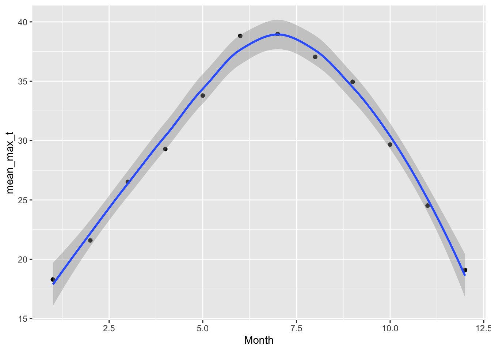
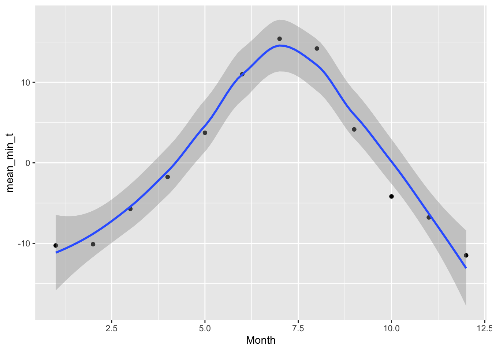

The Sevilleta Long Term Ecological Research (LTER) Program (Socorro, NM) rolled out a novel climate change experiment in 2019: the Mean-Variance Experiment (MVE). The experiment has been replicated in four ecosystems to date but the focus of this document is on the experimental infrastructure found in the Great Plains Grassland ecosystem, dominated by blue grama grass (Bouteloua gracilis). Hence Mean-Variance Blue or MVE Blue. The ecosystem is dominated by blue grama grass but the adjacent ecosystem, Chihuahuan Desert Grassland, is dominated by black grama grass (Bouteloua eriopoda). Great Plains Grassland extends northward throughout central North America while Chihuahuan Desert Grassland extends southward into Mexico. Thus, under a more arid climate, we would expect Chihuahuan Desert Grassland to expand it’s range northward. The experimental infrastructure is set near the ecotone of these two ecosystems. More information on this experiment can be found here: https://sevlter.unm.edu/mean-variance-experiment/. To test the recruitment dynamics of these dominant plants under climate change, we added seeds of each species to the experimental plots from 2019-2023 and tracked their germination and survival biweekly during the growing season and monthly during the dormant season.
Objectives
Bring in seed monitoring data for all five years, bring in keys, bring in soil moisture data, bring in climate data.
Explore data provide summary statistics.
Create graph of typical climate (last 5-6 years) for temperature and precipitation.
Separate monitoring data into germination and survival.
Find the best model for the germination data using year and mean and variance treatments as predictors
Graph germination by year, mean, and variance.
Find best model of survival by species, year, and mean and variance treatments. Or a model for each species. Graph.
Figure out the 1-3 events each year where 90-95% of germination occurs and isolate germination and soil moisture to those events and build a model to understand how soil moisture determines germination probability. Graph.
Characterize die off/survival. Is it gradual and consistent or happen in major events like germination. Graph?
Figure out how to test for legacy effects on germination and/or survival. Graph.
Setup
Read in necessary packages.
Read Data
Bring in seed monitoring data for all five years, bring in keys, bring in soil moisture data, bring in climate data.
Seed Census Data
DO NOT RUN THIS SECTION
Bring in treatments
DO NOT RUN THIS SECTION
Bring in soil moisture data
DO NOT RUN THIS SECTION
Bring in climate data
DO NOT RUN THIS SECTION
PICK UP HERE
blue_19_23 <-read_csv("germ_19_23.csv")
Rows: 26581 Columns: 9
── Column specification ────────────────────────────────────────────────────────
Delimiter: ","
chr (4): Corner, Species, Column, TP_ID
dbl (4): Plot, Row, Add_Year, Germ.binom
date (1): Obs_Date
ℹ Use `spec()` to retrieve the full column specification for this data.
ℹ Specify the column types or set `show_col_types = FALSE` to quiet this message.
Rows: 491730 Columns: 7
── Column specification ────────────────────────────────────────────────────────
Delimiter: ","
chr (4): sensor_id, sensor, plot, new
dbl (2): depth, value
dttm (1): TIMESTAMP
ℹ Use `spec()` to retrieve the full column specification for this data.
ℹ Specify the column types or set `show_col_types = FALSE` to quiet this message.
Rows: 1913973 Columns: 7
── Column specification ────────────────────────────────────────────────────────
Delimiter: ","
chr (4): sensor_id, sensor, plot, new
dbl (2): depth, value
dttm (1): TIMESTAMP
ℹ Use `spec()` to retrieve the full column specification for this data.
ℹ Specify the column types or set `show_col_types = FALSE` to quiet this message.
Rows: 1950048 Columns: 7
── Column specification ────────────────────────────────────────────────────────
Delimiter: ","
chr (4): sensor_id, sensor, plot, new
dbl (2): depth, value
dttm (1): TIMESTAMP
ℹ Use `spec()` to retrieve the full column specification for this data.
ℹ Specify the column types or set `show_col_types = FALSE` to quiet this message.
Rows: 1942389 Columns: 7
── Column specification ────────────────────────────────────────────────────────
Delimiter: ","
chr (4): sensor_id, sensor, plot, new
dbl (2): depth, value
dttm (1): TIMESTAMP
ℹ Use `spec()` to retrieve the full column specification for this data.
ℹ Specify the column types or set `show_col_types = FALSE` to quiet this message.
Rows: 1700742 Columns: 7
── Column specification ────────────────────────────────────────────────────────
Delimiter: ","
chr (4): sensor_id, sensor, plot, new
dbl (2): depth, value
dttm (1): TIMESTAMP
ℹ Use `spec()` to retrieve the full column specification for this data.
ℹ Specify the column types or set `show_col_types = FALSE` to quiet this message.
Rows: 969696 Columns: 7
── Column specification ────────────────────────────────────────────────────────
Delimiter: ","
chr (4): sensor_id, sensor, plot, new
dbl (2): depth, value
dttm (1): TIMESTAMP
ℹ Use `spec()` to retrieve the full column specification for this data.
ℹ Specify the column types or set `show_col_types = FALSE` to quiet this message.
met_00_23_50 <-read_csv("met_50.csv")
Rows: 190069 Columns: 12
── Column specification ────────────────────────────────────────────────────────
Delimiter: ","
dbl (10): StationID, Year, Month, Day_of_Month, Julian_Day, Hour, Temp_C, M...
dttm (1): Date_Time
date (1): Date
ℹ Use `spec()` to retrieve the full column specification for this data.
ℹ Specify the column types or set `show_col_types = FALSE` to quiet this message.
Data Exploration
Our data objects are ‘blue_19_23’,‘trts’, ‘sm_t_18’:‘sm_t_23’, ‘met_00_23_50’
summary(blue_19_23)
Plot Corner Species Row
Min. : 1.0 Length:26581 Length:26581 Min. :1.000
1st Qu.: 8.0 Class :character Class :character 1st Qu.:2.000
Median :15.0 Mode :character Mode :character Median :3.000
Mean :15.5 Mean :2.795
3rd Qu.:23.0 3rd Qu.:4.000
Max. :30.0 Max. :5.000
NA's :1 NA's :5
Column TP_ID Add_Year Obs_Date
Length:26581 Length:26581 Min. :2019 Min. :2019-09-07
Class :character Class :character 1st Qu.:2020 1st Qu.:2020-07-31
Mode :character Mode :character Median :2021 Median :2021-07-26
Mean :2021 Mean :2021-08-07
3rd Qu.:2022 3rd Qu.:2022-07-05
Max. :2023 Max. :2024-04-03
Germ.binom
Min. :0.000
1st Qu.:0.000
Median :0.000
Mean :0.134
3rd Qu.:0.000
Max. :1.000
NA's :1
head(blue_19_23)
# A tibble: 6 × 9
Plot Corner Species Row Column TP_ID Add_Year Obs_Date Germ.binom
<dbl> <chr> <chr> <dbl> <chr> <chr> <dbl> <date> <dbl>
1 8 SW BLACK 1 F 20198BLACKSW… 2019 2019-09-21 1
2 14 SW BLACK 1 H 201914BLACKS… 2019 2019-09-21 1
3 18 SW BLACK 1 J 201918BLACKS… 2019 2019-09-21 1
4 18 SW BLACK 1 A 201918BLACKS… 2019 2019-09-21 1
5 24 SW BLACK 1 A 201924BLACKS… 2019 2019-09-21 1
6 14 SW BLACK 1 B 201914BLACKS… 2019 2019-09-21 1
TIMESTAMP sensor_id sensor
Min. :2020-01-01 00:00:00 Length:1950048 Length:1950048
1st Qu.:2020-04-01 11:52:30 Class :character Class :character
Median :2020-07-01 23:45:00 Mode :character Mode :character
Mean :2020-07-01 23:45:00
3rd Qu.:2020-10-01 11:37:30
Max. :2020-12-31 23:30:00
plot depth new value
Length:1950048 Min. :12.00 Length:1950048 Min. :-1.30
Class :character 1st Qu.:12.00 Class :character 1st Qu.: 0.09
Mode :character Median :22.00 Mode :character Median : 0.25
Mean :23.67 Mean :10.19
3rd Qu.:37.00 3rd Qu.:21.43
Max. :37.00 Max. :46.90
NA's :53042
spc_tbl_ [190,069 × 12] (S3: spec_tbl_df/tbl_df/tbl/data.frame)
$ StationID : num [1:190069] 50 50 50 50 50 50 50 50 50 50 ...
$ Date_Time : POSIXct[1:190069], format: "2002-01-01 00:00:00" "2002-01-02 00:00:00" ...
$ Date : Date[1:190069], format: "2002-01-01" "2002-01-02" ...
$ Year : num [1:190069] 2002 2002 2002 2002 2002 ...
$ Month : num [1:190069] 1 1 1 1 1 1 1 1 1 1 ...
$ Day_of_Month : num [1:190069] 1 2 3 4 5 6 7 8 9 10 ...
$ Julian_Day : num [1:190069] 1 2 3 4 5 6 7 8 9 10 ...
$ Hour : num [1:190069] 0 0 0 0 0 0 0 0 0 0 ...
$ Temp_C : num [1:190069] NA NA NA NA NA NA NA NA NA NA ...
$ Min_Temp_C : num [1:190069] NA NA NA NA NA NA NA NA NA NA ...
$ Max_Temp_C : num [1:190069] NA NA NA NA NA NA NA NA NA NA ...
$ Precipitation: num [1:190069] NA NA NA NA NA NA NA NA NA NA ...
- attr(*, "spec")=
.. cols(
.. StationID = col_double(),
.. Date_Time = col_datetime(format = ""),
.. Date = col_date(format = ""),
.. Year = col_double(),
.. Month = col_double(),
.. Day_of_Month = col_double(),
.. Julian_Day = col_double(),
.. Hour = col_double(),
.. Temp_C = col_double(),
.. Min_Temp_C = col_double(),
.. Max_Temp_C = col_double(),
.. Precipitation = col_double()
.. )
- attr(*, "problems")=<externalptr>
Overall germination rate of 13.4% across five years, both treatments, both species.
Characterize and Graph Climate
The climate data are collected from meteorological stations at the Sevilleta NWR. These data come from met station 50, which is the nearest station to MVE Blue. Data began in 2000 and continues through 2023. Data is organized by date and time, temperature in celsius per hour, and minimum and maximum temperature for hour, total precipitation per hour in millimeters. I’m interested in the average range of temperatures for each season and the average annual and seasonal precipitation.
I want a graph where the x-axis is days of the year and there are three lines, each with confidence bands: average daily precip, daily high temperature, daily low temperature.
str(met_00_23_50)
spc_tbl_ [190,069 × 12] (S3: spec_tbl_df/tbl_df/tbl/data.frame)
$ StationID : num [1:190069] 50 50 50 50 50 50 50 50 50 50 ...
$ Date_Time : POSIXct[1:190069], format: "2002-01-01 00:00:00" "2002-01-02 00:00:00" ...
$ Date : Date[1:190069], format: "2002-01-01" "2002-01-02" ...
$ Year : num [1:190069] 2002 2002 2002 2002 2002 ...
$ Month : num [1:190069] 1 1 1 1 1 1 1 1 1 1 ...
$ Day_of_Month : num [1:190069] 1 2 3 4 5 6 7 8 9 10 ...
$ Julian_Day : num [1:190069] 1 2 3 4 5 6 7 8 9 10 ...
$ Hour : num [1:190069] 0 0 0 0 0 0 0 0 0 0 ...
$ Temp_C : num [1:190069] NA NA NA NA NA NA NA NA NA NA ...
$ Min_Temp_C : num [1:190069] NA NA NA NA NA NA NA NA NA NA ...
$ Max_Temp_C : num [1:190069] NA NA NA NA NA NA NA NA NA NA ...
$ Precipitation: num [1:190069] NA NA NA NA NA NA NA NA NA NA ...
- attr(*, "spec")=
.. cols(
.. StationID = col_double(),
.. Date_Time = col_datetime(format = ""),
.. Date = col_date(format = ""),
.. Year = col_double(),
.. Month = col_double(),
.. Day_of_Month = col_double(),
.. Julian_Day = col_double(),
.. Hour = col_double(),
.. Temp_C = col_double(),
.. Min_Temp_C = col_double(),
.. Max_Temp_C = col_double(),
.. Precipitation = col_double()
.. )
- attr(*, "problems")=<externalptr>
ggplot(clim_sum_3, aes(x = Month, y = mean_max_t)) +geom_point() +geom_smooth()
`geom_smooth()` using method = 'loess' and formula = 'y ~ x'

labs(title ="Average Daily Temp Max (C)")
$title
[1] "Average Daily Temp Max (C)"
attr(,"class")
[1] "labels"
ggplot(clim_sum_3, aes(x = Month, y = mean_min_t)) +geom_point() +geom_smooth()
`geom_smooth()` using method = 'loess' and formula = 'y ~ x'

labs(title ="Average Daily Temp Min (C)")
$title
[1] "Average Daily Temp Min (C)"
attr(,"class")
[1] "labels"
The precipitation plot looks especially underwhelming and doesn’t capture those deluges of rain. Consider grouping by month. Also pivot longer the climate variables so they’re easier to graph
Simple model of germination using Year and Treatments